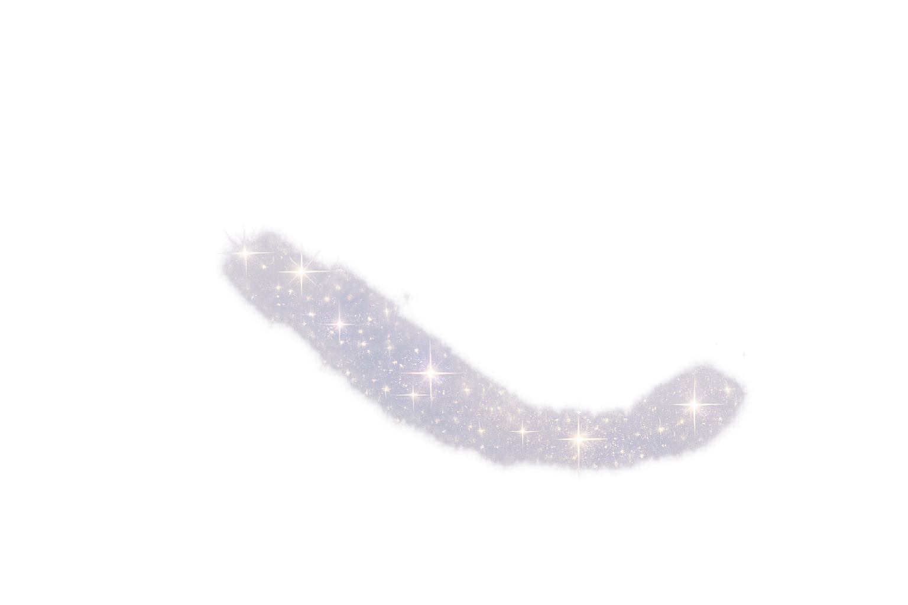
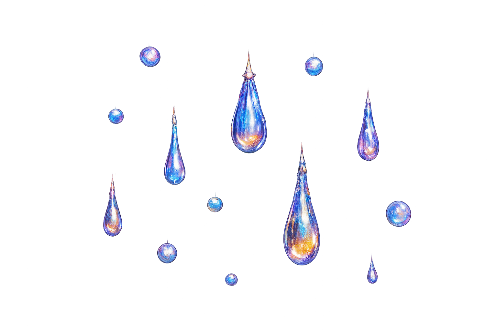
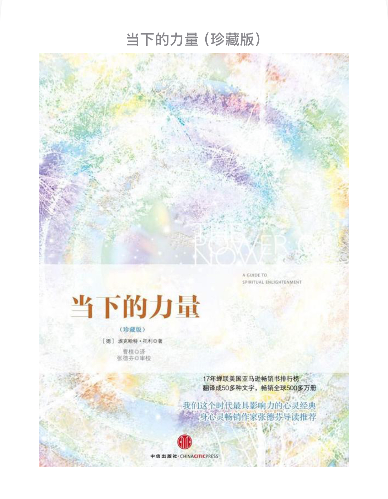
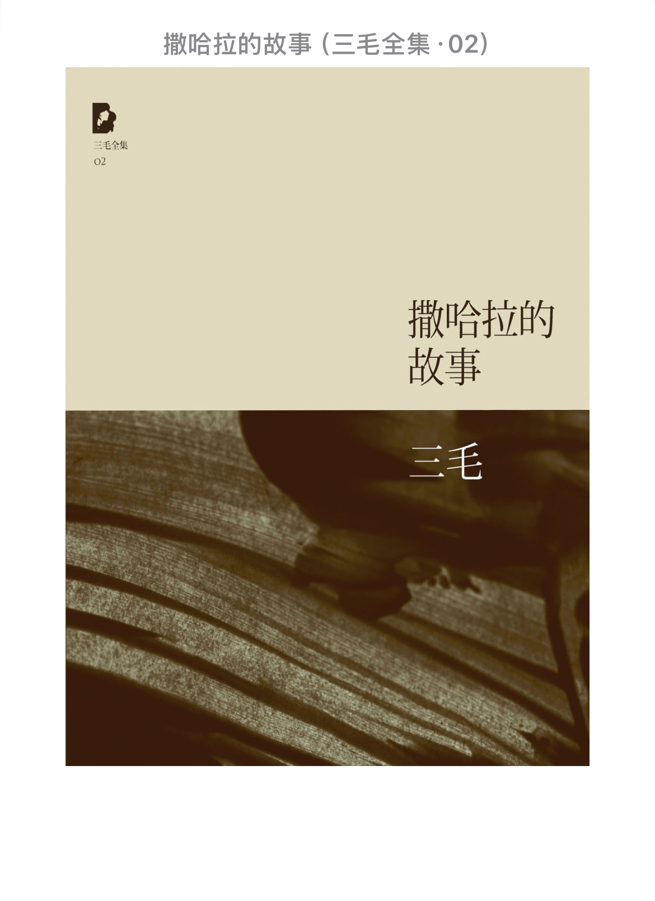
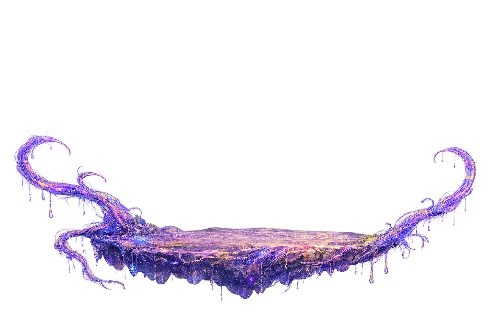
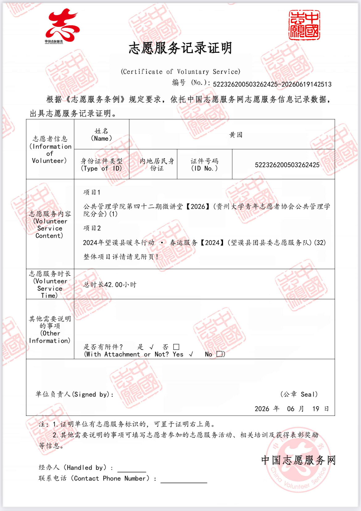
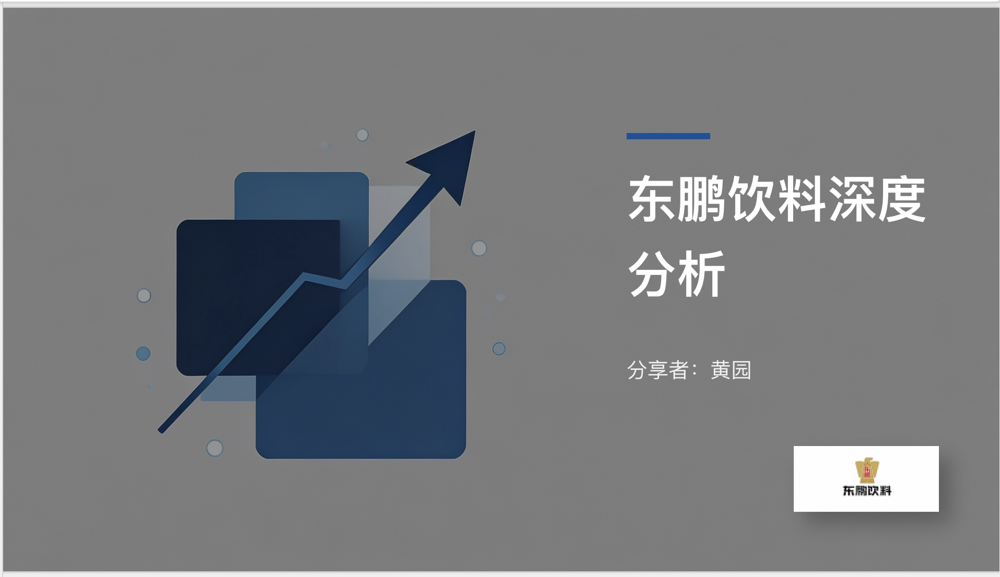
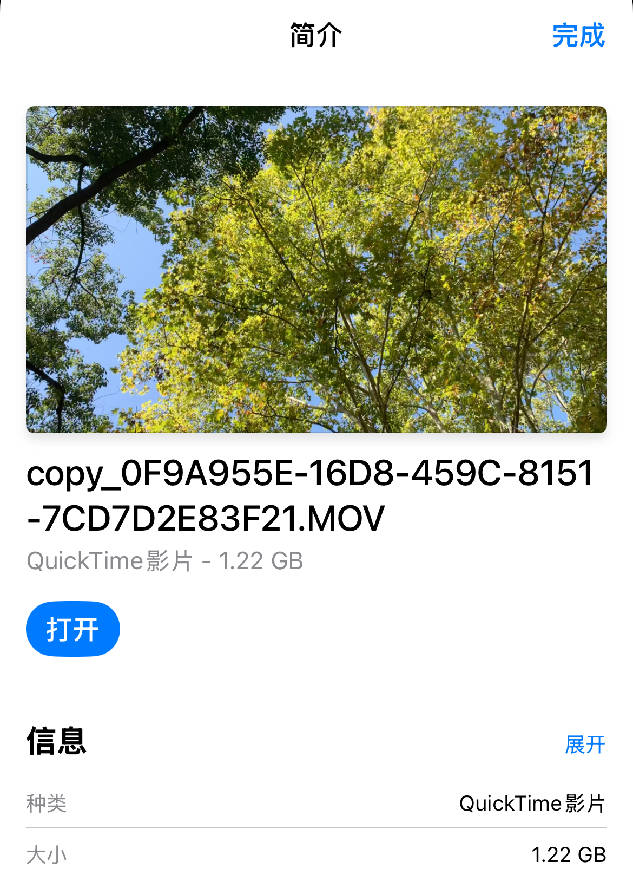

Reading
《经营未来》
起初是被互联网“贫穷的礼物”这一话题吸引而观看。整本书看下来，个人觉得前半部分讲自己，后半部分在讲韩国。虽然后半部分夹杂了些许政治意味，并不能完全体现李明博的个人魅力。但我还是觉得这本书很值得青年人观看而学习他的“气魄”。如轴一般的坚持原则，如水一般的灵活思想。


Hello, I'm
黄园
Labor and Social Security Student
Aspiring HRBP | Lifelong Learner | Explorer of Growth
Explore My JourneyAbout Me
我目前就读于贵州大学劳动与社会保障专业，系统学习人力资源管理、薪酬管理、劳动与社会保障法学、社会保险学等课程。
我关注人与组织之间的连接，也在行政支持、材料审核、活动组织、项目执行和 AI 评估等真实场景中持续训练自己的沟通、统筹与细节管理能力。
未来希望向 HRBP 方向成长，在理解业务与人的基础上，为团队建立更有温度也更有效率的协作方式。
Career Journey
Campus Experience
Life Sharing
起初是被互联网“贫穷的礼物”这一话题吸引而观看。整本书看下来，个人觉得前半部分讲自己，后半部分在讲韩国。虽然后半部分夹杂了些许政治意味，并不能完全体现李明博的个人魅力。但我还是觉得这本书很值得青年人观看而学习他的“气魄”。如轴一般的坚持原则，如水一般的灵活思想。

这是一本我从大二看到大三的书。感觉到被情绪或欲念支配的痛苦时，我总会打开这本书。它不是明确的方法论，而是引导你思考如何意识到自我的存在，自如地活在当下。

我很喜欢三毛的作品，感受她对世界的观察方式和细腻程度，仿佛让我找到了知音。想了很多句子去描述喜欢这本书的原因，删删改改还是决定只留下两个词：爱与灵性。

Other Attempts

参与多类志愿服务，在真实服务场景中理解协作与责任。
参与 2024 年春节车站志愿服务、中秋十字街社区志愿服务，以及一些校内志愿活动等，在真实服务场景中理解协作与责任，观察不同人群。

从行业报告开始，围绕企业与市场进行资料整理与分析。
这是一次课程作业型探索。我从分析行业报告开始，围绕企业发展、品牌定位和市场竞争进行资料整理与分析，训练自己把资料转化为结构化判断。

从调研到策划、文案和剪辑，是大一参加的第一个比赛。
这是我大一参加的第一个比赛，主题是为贵州的景点制作宣传片。虽然没有获奖，但从调研到完成内容策划、文案撰写与剪辑尝试，让我看到了自己的表达潜能。
Contact
如果你想了解我的经历、项目实践或 HRBP 方向探索，可以通过以下方式联系我。